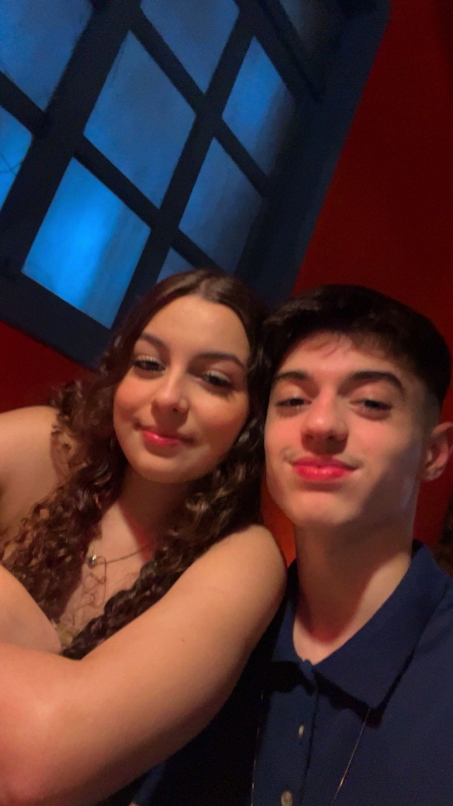
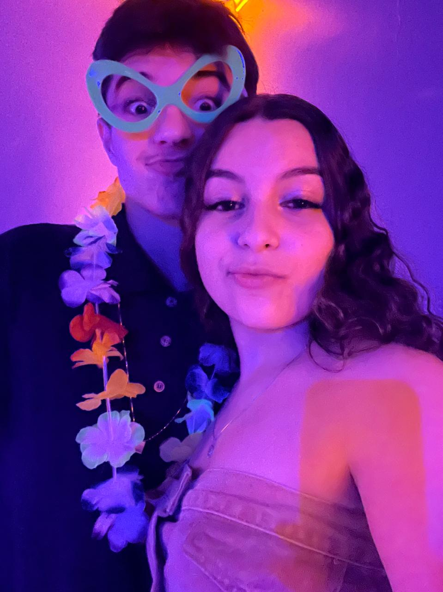
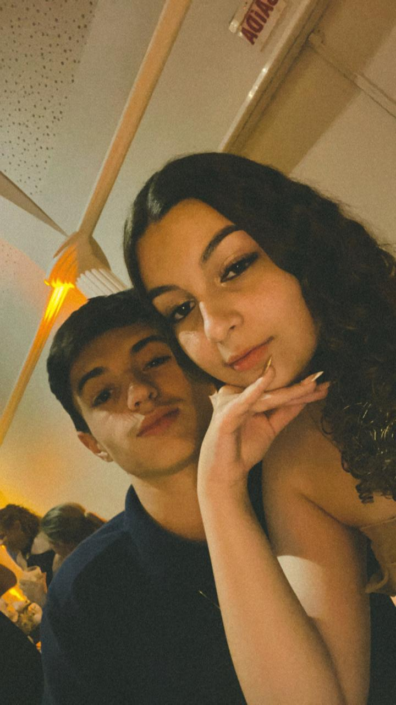

O SCTEC é um programa do Governo de Santa Catarina, através da SCTI, em parceria com o SENAI/SC, que visa impulsionar a inovação e o desenvolvimento tecnológico no estado. O programa capacita o participante para o uso da Inteligência Artificial e o prepara para construir ou aprimorar sua carreira em tecnologia.
No SCTEC, você terá acesso a uma das três trilhas de aprendizagem , conforme sua experiência e objetivos profissionais: Carreira Tech, IA na Prática e IA para DEVs. Conforme o caminho que escolher, você poderá evoluir de conhecimentos básicos para formações especializadas, que vão prepará-lo para atuar no mercado atual e futuro.
Bom, eu optei pelo Carreira Tech - Trilha desenvolvimento de software, no qual ao total tem 518 horas se não estou enganado, porém, até este momento, eu não fiz a etapa "Despertar", e talvez nem faça. Essa etapa na qual estou falando, ela é composta por palestras e uma trilha rápida. A etapa na qual estou agora é a etapa "Primeiros passos", onde estou realizando o meu primeiro curso, o "Introdução à Programação Front-End e Back-End" de 20 horas. Após completar esta etapa e se eu for aprovado, irei para a etapa "Profissionalizar", na qual eu irei optar fazer o curso "Desenvolvimento Back-End", tendo ele 300 horas. Ao finalizar este e conseguir, irei para a etapa "Aperfeiçoar", nesta etapa irei fazer o curso "Cloud e DevOps" de 32 horas. Depois haverá alguns cursos transversais, que eu optarei fazer o de "Segurança da Informação" de 16 horas. E vale ressaltar que durante a etapa "Profissionalizar" também há + 96 horas adicionais de Mentoria de carreira e Inglês.
Me chamo Gabriel Lunelli, tenho 16 anos, sou apaixonado pela minha Princesa, e estou estudando para atuar futuramente como um Engenheiro DevOps ou Cloud!


